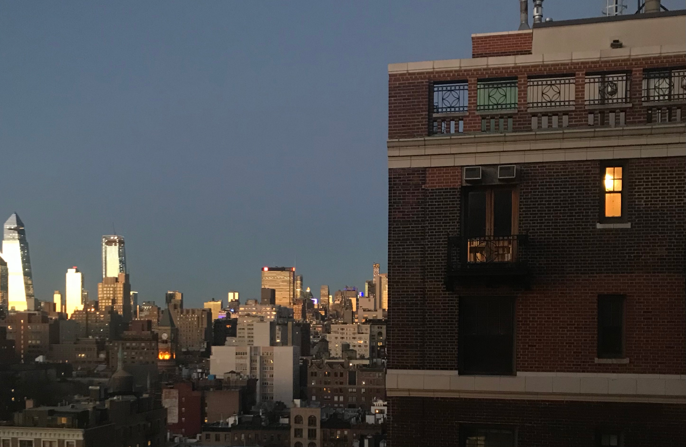

MEMORY
王与遥
That moment felt like a long, quiet hold of breath. So much that I was blinking, expecting the movement to be slowed like sludge, sending a small ripple from my eyelashes. It’s this moment that allows me to visualize the spills.
This moment—where was it?

Fault lines tremble underneath my glass house
But I put it out of my mind long enough to call it courage
To live without a lifeline
I bend the definition of faith to exonerate my blind eye
Till the sirens sound, I'm safe